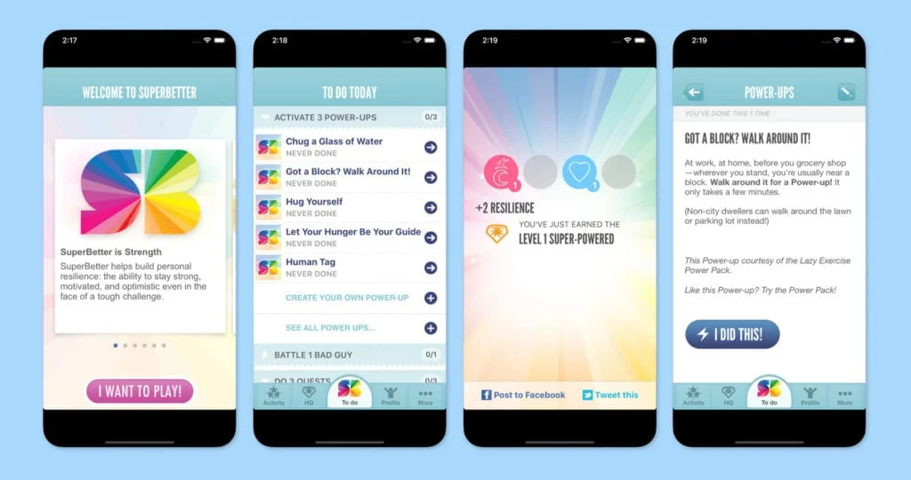
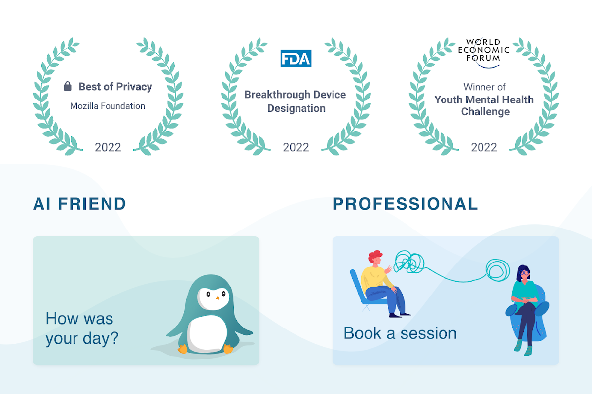
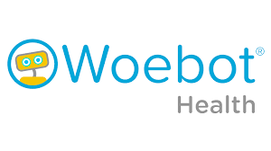

IA y la resiliencia en el manejo del estrés y la ansiedad
RESILIENCIA
Aqui abordaremos lo principal sobre las carcteristicas de la resiliencia.
Caracteristicas
La resiliencia es la capacidad de una persona o sistema para adaptarse y recuperarse frente a situaciones adversas, desafíos o cambios significativos. En las personas, implica mantener o recuperar el equilibrio emocional, aprender de las experiencias difíciles y continuar adelante con fuerza y optimismo.
Saber manejar las situaciones que se te presentan.
Resistencia a los eventos traumáticos.
Dolor, pérdida, cambios de ambiente, en nuestro organismo.
Resistencia y adaptación a un nuevo cambio.
En términos más concretos, la resiliencia puede manifestarse como:
Emocional: Superar la tristeza o el estrés tras una pérdida o fracaso.
Psicológica:Desarrollar habilidades y estrategias para enfrentar problemas o traumas.
Social: Buscar apoyo en la familia, amigos o comunidades en tiempos de crisis.
Física: Recuperarse físicamente después de una enfermedad o lesión.
La resiliencia no significa evitar el dolor o las dificultades, sino saber enfrentarlos de manera constructiva, lo que fortalece el carácter y fomenta el crecimiento personal.
Ventajas y Desventajas
Ventajas de la resiliencia
Superación de adversidades:
La resiliencia ayuda a enfrentar los momentos difíciles de la vida, transformándolos en oportunidades de aprendizaje y crecimiento personal.
Mejor manejo del estrés:
Las personas resilientes desarrollan estrategias para lidiar con situaciones complicadas, lo que reduce los niveles de ansiedad y mejora su estabilidad emocional.
Adaptabilidad:
Ser resiliente permite adaptarse con mayor facilidad a los cambios, encontrando soluciones creativas ante problemas inesperados.
Desventajas de la resiliencia
Sobrecarga emocional:
La resiliencia puede llevar a asumir demasiadas responsabilidades, lo que puede resultar en agotamiento físico y mental.
Represión de emociones:
Las personas resilientes a veces evitan procesar emociones negativas, priorizando el "superar" los problemas, lo que puede derivar en problemas emocionales a largo plazo.
Expectativas sociales excesivas:
Se puede generar presión externa para "ser fuerte" todo el tiempo, lo que lleva a minimizar sus propias necesidades o pedir ayuda cuando realmente lo necesitan.
EMOCIONES
Comprendiendo cuales son las emociones que sentimos para la resilencia.
Socialización
Es el proceso de interactuar y establecer relaciones con otras personas. Las emociones que acompañan la socialización incluyen la alegría, la seguridad y la satisfacción de formar parte de un grupo.
Es un concepto fundamental que engloba el proceso mediante el cual los individuos aprenden e internalizan las normas, valores y comportamientos aceptados en su sociedad o grupo social, convirtiéndose en miembros competentes y funcionales de dicho grupo. Este fenómeno tiene una relevancia profunda en múltiples disciplinas, incluyendo la Psicología, la Sociología, la Antropología y, por supuesto, la Medicina.
Empatía
Es la capacidad de comprender y compartir los sentimientos de los demás. Las emociones asociadas con la empatía incluyen la compasión, el amor y la tristeza, ya que implican una conexión emocional profunda con las experiencias de los otros.
La empatía nos permite ver las cosas desde la perspectiva del otro en vez de la nuestra. Es una habilidad crucial que permite las relaciones sociales y profesionales, desarrolla la conciencia de uno mismo y contribuye a un mundo equitativo y pacífico. La empatía es necesaria para expresar la compasión (la motivación para actuar ante el sufrimiento de otras personas).
Comunicación
Implica transmitir pensamientos y emociones de una persona a otra. Las emociones en la comunicación pueden ser variadas: entusiasmo, frustración, alegría, o incluso ira, dependiendo del contexto y del mensaje.
Es una disciplina de las ciencias sociales que se enfoca en cómo, por qué, y con cuáles efectos la gente usa idiomas y medios de comunicación para transmitir información. Se encuentra entre los campos de estudio más antiguos y nuevos, tiene raíces históricas que se remontan a los tiempos de los griegos y los romanos y otras culturas antiguas, y tiene raíces modernas que están arraigadas en los últimos desarrollos de las ciencias.
Fortaleza
Es la capacidad de afrontar adversidades y desafíos. Las emociones que se vinculan con la fortaleza incluyen la determinación, la esperanza, el coraje y la resiliencia.
La fortaleza es una cualidad que se refiere a la capacidad de una persona, organización o sistema para resistir y superar adversidades, mostrando firmeza y determinación ante los desafíos. También puede aludir a la fuerza física o emocional que permite enfrentar situaciones difíciles con resiliencia. Además, el término se utiliza para describir un punto fuerte o ventaja destacada de algo.
Tolerancia
La capacidad de aceptar las diferencias, acompañada de emociones como paciencia, calma y comprensión. Se llama tolerancia a la capacidad del cuerpo humano de lidiar con ciertas sustancias sin desencadenar una respuesta inmunitaria, o también al margen de error que, a la hora de fabricar un producto, se considera aceptable o natural del mismo proceso.
Ansiedad
Es una emoción caracterizada por una sensación de preocupación o inquietud ante situaciones inciertas o percibidas como amenazantes. Si bien puede ser útil para preparar al individuo para enfrentar un desafío, un exceso de ansiedad puede dificultar la claridad mental y aumentar la tensión emocional, especialmente en contextos de estrés prolongado.
Frustración
Es una emoción que surge cuando una persona encuentra obstáculos para alcanzar sus objetivos o satisfacer sus necesidades. Si no se maneja adecuadamente, puede generar sentimientos de impotencia y aumentar el impacto negativo del estrés, aunque también puede ser una oportunidad para reflexionar y buscar nuevas estrategias.
Estrés
Es una respuesta emocional y física que ocurre cuando una persona percibe que las demandas de una situación superan sus recursos para afrontarlas. Se asocia con emociones negativas como ansiedad, frustración, miedo e irritabilidad, las cuales pueden afectar tanto la mente como el cuerpo si no se manejan adecuadamente. Sin embargo, en niveles moderados, el estrés puede motivar el rendimiento y la acción.
Autocompasión
Es la capacidad de ser amable y comprensivo con uno mismo en momentos de estrés, fracaso o sufrimiento. Esta emoción reduce la autocrítica y fomenta una actitud más equilibrada y positiva hacia los propios errores, lo que fortalece la resiliencia emocional y promueve el bienestar.
Resiliencia emocional
Es la capacidad de una persona para reconocer, regular y manejar sus emociones de manera efectiva ante situaciones adversas, permitiendo superar dificultades y adaptarse a los cambios. Es una habilidad que combina optimismo, esperanza y asertividad emocional, facilitando la recuperación tras experiencias difíciles y fortaleciendo la capacidad de enfrentar futuros desafíos con mayor seguridad.
Factores que Contribuyen a la Resiliencia
Relaciones de Apoyo:
Tener relaciones de cariño y apoyo dentro y fuera de la familia es crucial. Estas relaciones proporcionan amor, confianza, modelos a seguir y seguridad.
Habilidades de Planificación:
La capacidad para hacer planes realistas y seguir los pasos necesarios para llevarlos a cabo es fundamental.
Visión Positiva de Sí Mismo:
Tener una visión positiva de uno mismo y confianza en las propias fortalezas y habilidades contribuye significativamente a la resiliencia.
Estrategias para Desarrollar la Resiliencia
Fomentar Relaciones Positivas:
Mantener conexiones cercanas con familiares, amigos y otras personas de apoyo puede proporcionar un sentido de pertenencia y seguridad.
Aceptar el Cambio:
Aceptar que el cambio es una parte inevitable de la vida puede ayudar a adaptarse mejor a las nuevas circunstancias.
Establecer Metas Realistas: Establecer metas alcanzables y trabajar hacia ellas paso a paso puede proporcionar un sentido de logro y dirección.
Tomar Decisiones: Desarrollar habilidades para tomar decisiones efectivas puede ayudar a enfrentar situaciones difíciles con mayor confianza.
Cuidar de Uno Mismo: Practicar el autocuidado, como mantener una dieta saludable, hacer ejercicio regularmente y dormir lo suficiente, es fundamental para mantener la resiliencia.
Importancia de la Resiliencia
La resiliencia no solo permite a las personas “rebotar” de experiencias difíciles, sino que también les ayuda a crecer y prosperar en medio de la adversidad. Es una habilidad esencial para el bienestar emocional y mental, y puede ser desarrollada a lo largo del tiempo mediante la práctica y el esfuerzo consciente.
Ejemplos de Resiliencia en la Historia
Nelson Mandela: Pasó 27 años en prisión y, a pesar de las adversidades, se convirtió en un símbolo de resistencia y lucha por la igualdad y la justicia.
Malala Yousafzai: Sobrevivió a un ataque talibán y continuó abogando por la educación de las niñas, convirtiéndose en la persona más joven en recibir el Premio Nobel de la Paz.
Viktor Frankl: Psiquiatra y sobreviviente del Holocausto, desarrolló la logoterapia, una forma de psicoterapia que enfatiza la búsqueda de sentido en la vida, incluso en las circunstancias más difíciles.
IA & RESILIENCIA
Comprendiendo cómo la IA ayuda en el crecimiento de nuestra Resiliencia.
Aplicaciones de IA en Resiliencia
La inteligencia artificial (IA) está transformando cómo las personas manejan el estrés y desarrollan resiliencia. Aplicaciones como Woebot y Wysa utilizan terapia cognitivo-conductual para ayudar a los usuarios a gestionar ansiedad y pensamientos negativos.
Apps de IA están revolucionando la salud mental.
Gamificación y Simuladores
Herramientas como SuperBetter utilizan juegos para fomentar el desarrollo de una mentalidad resiliente. Además, simuladores de realidad virtual entrenan respuestas al estrés, ayudando a las personas a enfrentar escenarios complejos.
Limitaciones y Ética
Aunque la IA ofrece soluciones innovadoras, es crucial garantizar la privacidad de los datos y evitar sesgos en los algoritmos. El desarrollo ético y responsable de estas tecnologías es clave para su efectividad y aceptación generalizada.
Chatbots
Aplicaciones
Salud mental y emocional: Woebot o Wysa son chatbots de IA que están enfocados en ayudar a las personas mediante el uso de la terapia cognitiva y conductual. Estas aplicaciones nunca están fuera de servicio y ayudan a los usuarios a encontrar formas de lidiar con el estrés y la ansiedad. Además, a través de técnicas de cuestionamiento efectivas y avanzadas, pueden verificar constantemente el estado de ánimo del usuario.
Apoyo en el lugar de trabajo: Se puede proporcionar ayuda relacionada con la gestión del estrés y consejos sobre gestión del estrés a través de algunos chatbots especializados como SAP Conversational AI y redirigir a los empleados a recursos internos relevantes.
Gestión de crisis: Crisis Text Line es una de las plataformas que combina chat con análisis automatizado utilizando algoritmos de lenguaje de IA que determinan la gravedad del caso y el orden en que debe actuarse. Algunas versiones avanzadas combinan el reconocimiento de patrones textuales y vocales con el análisis de este fenómeno en la evaluación de la amenaza.
Educación emocional: Con un enfoque en el uso independiente y coherente, para ayudar a fortalecer la resiliencia emocional se han introducido chatbots como TalkSpace que enseñan habilidades de regulación emocional.
Woebot
Combina la inteligencia artificial con enfoques psicológicos y mejora la salud mental. En cuanto al bienestar mental, Woebot también utiliza el procesamiento del lenguaje natural para responder en tiempo real a una multitud de preocupaciones sobre el bienestar.
Replika
Este chatbot actúa como un compañero virtual, ayudando a mejorar las habilidades sociales al participar en intercambios significativos y empáticos.
Koko
Utiliza inteligencia artificial para brindar apoyo conectando a los usuarios con grupos anónimos en crisis o ruptura emocional.
Aplicaciones móviles
Aplicaciones
Seguimiento del bienestar: Headspace y Calm son herramientas habilitadas por IA que proporcionan recomendaciones sobre qué ejercicios de meditación y relajación realizar. Además, estas aplicaciones llevan un registro del sueño, así como del nivel de actividad física y brindan retroalimentación para mejorar la integración de la mente y el cuerpo.
Construcción de la resiliencia: Resilience Trainer es una aplicación que utiliza cuestionarios interactivos así como algoritmos adaptativos para construir fortaleza mental. También hay juegos en estas aplicaciones que se basan en la psicología positiva y permiten a los usuarios experimentar el uso de habilidades de afrontamiento en la práctica.
Gamificación y compromiso: SuperBetter es una de las plataformas que se ha encontrado que utiliza mecánicas de juego para trabajar la creatividad en la resolución de problemas al crear objetivos basados en la teoría de la autodeterminación.
Happify
Proporciona juegos y ejercicios que están destinados a desarrollar la fuerza emocional y afrontar el estrés. Además, utiliza IA para rastrear el progreso del usuario y modificar los desafíos establecidos para él.
BetterUp
Ayuda a realizar una evaluación basada en IA para saber dónde puede evolucionar la persona personalmente y profesionalmente. Incluye coaching virtual mejorado por IA para avanzar en habilidades socioemocionales.
Daylio
Es una aplicación de diario de seguimiento del estado de ánimo que propone hábitos positivos de acuerdo con sistemas de IA basados en los patrones de comportamiento pasados del usuario.
SuperBetter
Recomienda tareas diarias atractivas para moldear la mentalidad correcta, así como prepararse para enfrentar problemas bastante difíciles.

Simuladores
Aplicaciones
Preparación para desastres: Organizaciones gubernamentales como la FEMA de Estados Unidos NIMS despliegan IA para simular situaciones de crisis y ser mejores tomadores de decisiones para el personal de emergencia. Este tipo de simuladores también trabajan para prever diferentes tipos de impactos antes de desastres reales con el fin de prevenir o minimizar sus daños.
Entrenamiento en resiliencia: Algunas empresas mejoran sus simuladores existentes e integran realidad virtual, junto con algoritmos de IA para capacitar e instruir a los usuarios en la gestión del estrés y la rápida adaptación durante situaciones críticas. Por ejemplo, los simuladores pueden recrear condiciones laborales exigentes o escenarios de rescate y probar la eficiencia en la toma de decisiones de los operadores.
Educación basada en escenarios: Herramientas como MyCrisis intentan aliviar estas preocupaciones al ofrecer recursos interactivos en los que se espera que el usuario sea colocado en diversas situaciones de recursos de emergencia y se evalúe el impacto potencial de sus decisiones.
Virtual Reality Resilience Training
Esto implica el uso de aplicaciones basadas en IA para mejorar la respuesta a la exposición al estrés. Tales sistemas son capaces de modificar los niveles de complejidad en línea de acuerdo con las capacidades del usuario.
Project ARIES
Es una plataforma de simulación para la evaluación del comportamiento humano en un escenario de cambio climático.
CrisisVR
Es un entrenamiento de simulación virtual para fuerzas de seguridad y líderes en la toma de decisiones en violencia geopolítica.
El Estrés y su Impacto
Comprendiendo cómo el estrés afecta nuestra vida diaria.
¿Qué es el Estrés?
El estrés es una respuesta física y emocional que ocurre cuando una persona percibe que las demandas externas exceden sus recursos. Esta reacción puede ser positiva, como en situaciones que requieren enfoque, o negativa, cuando se vuelve crónica y afecta la salud.
El estrés debe gestionarse para evitar consecuencias graves.
Niveles de Estrés
Los niveles de estrés pueden variar considerablemente:
0-25: Estado de relajación o tranquilidad.
26-50: Estrés leve; distracciones ocasionales.
51-75: Estrés moderado; interfiere con la concentración.
El estrés prolongado puede derivar en problemas graves de salud, como hipertensión, ansiedad y depresión. Es esencial implementar técnicas de manejo, como la meditación, la actividad física y el establecimiento de prioridades.
IA para cada nivel de estrés
Para los distintos manejos del estrés, existen distintas inteligencias artificiales que nos pueden ayudar a canalizar nuestras emociones dependiendo del nivel de estrés en el que nos encontremos. Por ejemplo, Meta AI o ChatGPT nos pueden ayudar con pequeños problemas que nosotros podamos tener, con nervios, confusiones o simplemente desahogarse. Sin embargo, hay distintas inteligencias artificiales que cumplen con la función de poder ayudarnos con problemas más específicos y dependiendo de nuestro nivel de estrés. A continuación, se presentan algunas IA que nos pueden ayudar dependiendo el nivel de estrés en el que nos encontremos:
Yana
Yana está diseñada para fortalecer y mejorar el bienestar emocional, ya sea en momentos de tristeza, ansiedad o simplemente para llevar un registro de tus sentimientos. Esta app funciona como un chatbot o amigo virtual, ayudándote a desahogar tus emociones y a monitorear tu estado de ánimo. Utiliza herramientas de terapia cognitivo-conductual para identificar y transformar pensamientos negativos en percepciones más saludables.
Wysa
Wysa utiliza un simpático pingüino como guía para ayudarte a través de los altibajos de la vida. Con técnicas basadas en la terapia dialéctica conductual, terapia cognitivo-conductual, yoga y meditación, Wysa está diseñada para apoyarte en momentos de estrés, ansiedad, problemas de sueño y más.

Bambú
Bambú es una aplicación en español que te ayuda a meditar, relajarte y dormir mejor. Ideal para principiantes o expertos en meditación, con sesiones que varían desde 3 minutos en adelante. Ofrece una versión gratuita y contenido adicional mediante suscripción.
Woebot
Woebot actúa como terapeuta virtual para poder leer y escuchar tus problemas emocionales, ayudándote a manejar el estrés, la ansiedad y la depresión. Aunque no reemplaza a un terapeuta humano, ofrece una opción accesible y anónima para quienes buscan ayuda inicial.

Conclusión
Gracias a este proyecto, podemos concluir que la resiliencia es una habilidad esencial para enfrentar las adversidades y adaptarse a los cambios. La capacidad de manejar el estrés y recuperarse de situaciones difíciles no solo fortalece el carácter, sino que también promueve el crecimiento personal y el bienestar integral.
La inteligencia artificial (IA) ha demostrado ser una herramienta valiosa en el apoyo a la resiliencia. A través de chatbots y aplicaciones móviles, la IA ofrece apoyo emocional, técnicas de manejo del estrés y recursos educativos que ayudan a las personas a enfrentar y superar las dificultades. Ejemplos como Woebot, Replika y Wysa muestran cómo la IA puede proporcionar asistencia continua y personalizada, mejorando el bienestar mental y emocional de los usuarios.
Además, los simuladores y aplicaciones basadas en IA permiten la preparación para desastres y el entrenamiento en resiliencia, recreando escenarios críticos y evaluando la eficiencia en la toma de decisiones. Estas tecnologías no solo ayudan a prever y minimizar los impactos de situaciones adversas, sino que también fortalecen la capacidad de respuesta y adaptación de las personas.
En resumen, la combinación de resiliencia e inteligencia artificial ofrece un enfoque innovador y efectivo para enfrentar los desafíos del estrés y la adversidad. Al integrar estas herramientas en nuestra vida cotidiana, podemos mejorar nuestra capacidad para adaptarnos, recuperarnos y crecer frente a las dificultades, promoviendo un bienestar integral y sostenible.